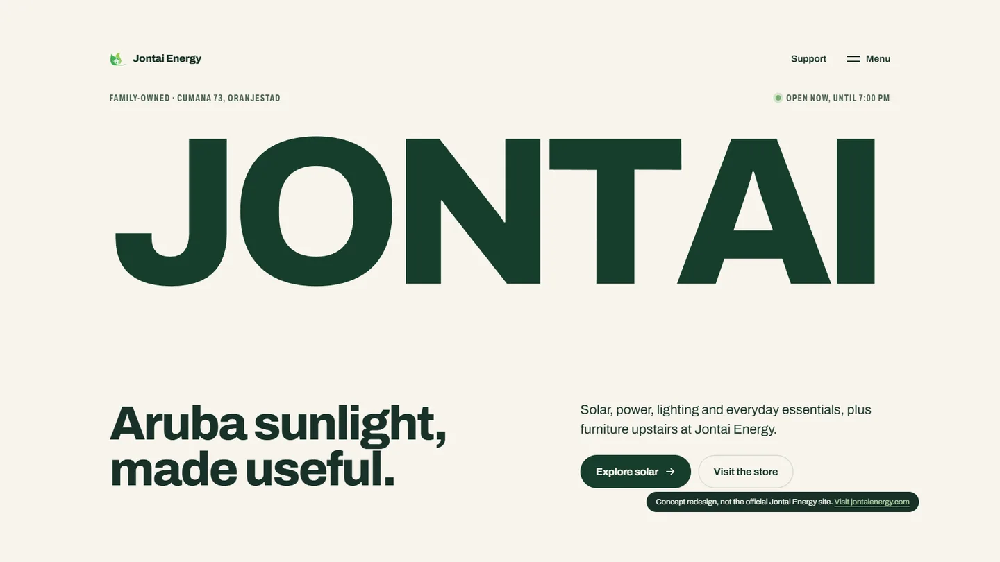
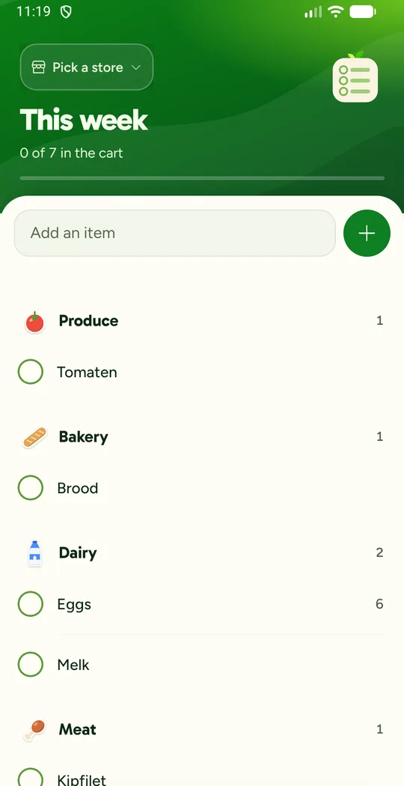
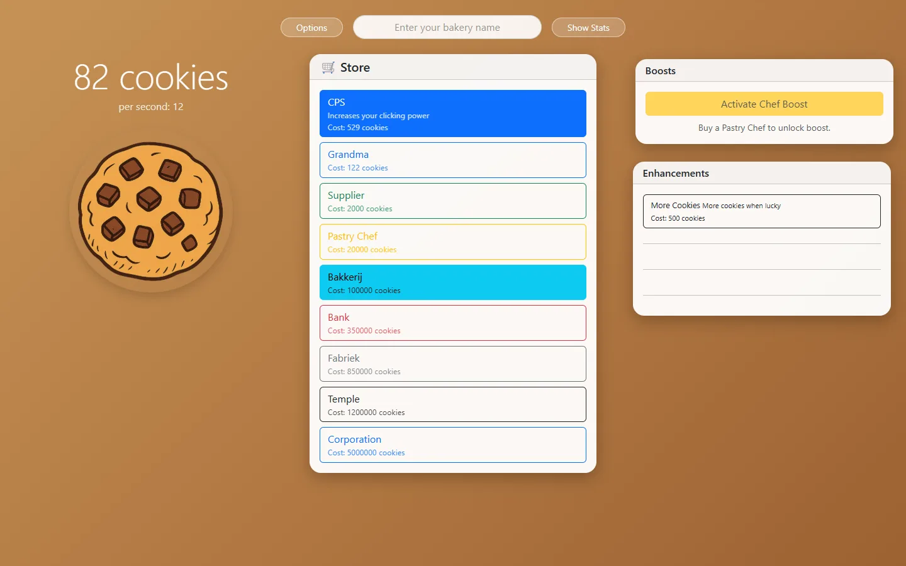

MBO-4 Software Development
Completed to confirm
Programming, algorithms, software development, databases, application architecture, technical problem-solving.
Sequencing 0%
Inside the living machine
Exploring the systems, ideas and disciplines that shape how I build.
I’m Bob Chung, a student software engineer based in Rotterdam. Born and raised in Aruba and Chinese by heritage, I moved to the Netherlands at eighteen.
I work across databases, game development and web development, and each discipline sharpens the others. Hardware and electrical engineering are next on my route.
I build with curiosity and test with honesty.
Completed to confirm
Programming, algorithms, software development, databases, application architecture, technical problem-solving.
Future direction, not a completed qualification
Mechanics, electronics, embedded systems, control systems, hardware and software integration.
Overhead, the rungs have become circuit boards, finished and lit. Further up they turn into shafts and gears, some still only drawn.
Point at a system to light it and the ones it works with. Select it to read what it does.
The workshop at the top of the machine. Each project stands in it as its own installation.
01 / 04 Website · Concept redesign · 2026
A concept redesign for a solar, power and furniture store in Aruba. Its home page is one Aruban day that plays as you scroll, so the installation tracks a small sun along an arc.
02 / 04 Android app · 2026
A grocery list for Android. Recipes and typed items merge into one list, sorted in the order of the store’s aisles, so the arm holds it over a row of parts lined up in order.
03 / 04 Android app · 2026
A gym log for Android. It gives you your next weight from your own history, keeps your streak and earns you a rank: a bar loaded with plates, each heavier than the last.
04 / 04 Browser game · School project · 2025
A browser game built with a classmate around one loop: click, earn, reinvest. One press, a counter and a belt that never stops.
The helix, the circuits, the systems and the workshop were one machine all along. That is how I work: software today, an internship in cybersecurity now, mechatronics next, and the most interesting problems where they meet.
Website · Concept redesign · 2026
A concept redesign of the website for Jontai Energy, a store in Oranjestad, Aruba, for solar, power, lighting and furniture. Its home page is one Aruban day that plays as you scroll.

Android app · 2026
A grocery list for Android. Recipes and typed items merge into one list, sorted in the order of the store’s aisles, offline and checked off with one hand.

Android app · 2026
A gym log for Android. It gives you your next weight from your own history, keeps your streak and earns you a rank, with weekly leagues and a top 100.
Screens to come
Browser game · School project · 2025
A browser-based incremental game, built as a school project around one satisfying loop: click, earn cookies, reinvest in upgrades and watch production compound.
